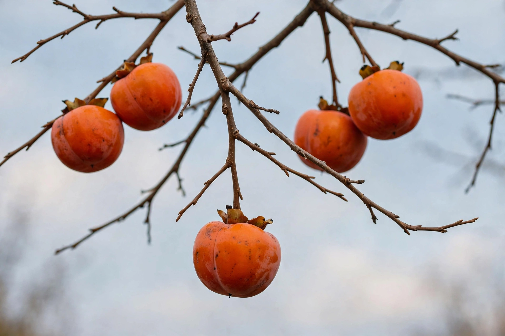

Persimmon
From Wikipedia, the free encyclopedia

A persimmon is the orange, tomato-shaped fruit of trees in the genus Diospyros — chiefly the Asian kaki (D. kaki), cultivated in China for over two thousand years and beloved in Japan (where it is a national autumn emblem), and the smaller American persimmon (D. virginiana). Persimmons divide the fruit world in two: astringent varieties (like the acorn-shaped Hachiya) are mouth-puckeringly tannic until bletted to a jelly softness, when they turn honey-sweet; non-astringent types (the squat Fuyu) can be eaten crisp like an apple.
Ripening and craft
Astringency is soluble tannin; ripening — or treatment with carbon dioxide or alcohol vapour, used commercially in Spain's Ribera del Xúquer (whose "kaki" is a protected name) — locks it away. Japan dries persimmons into hoshigaki: peeled, hung, and gently massaged over weeks until a white bloom of sugar dusts their amber flesh, a winter delicacy. In Korea dried persimmons float in sujeonggwa punch; in Italy cachi hang in every autumn market; in the American South, wild persimmons bake into steamed puddings, and folklore reads the seeds — spoon, fork or knife shapes in the kernel — for the coming winter's weather.
Character
Ripe kaki are all texture and glow: translucent, spiced-honey sweetness with almost no acid. The fruit's late-season timing — colouring after the leaves fall — made it a symbol of autumn in East Asian art, and its tannin (kakishibu) a traditional dye and wood preservative in Japan. Few fruits punish impatience so memorably or reward it so well.